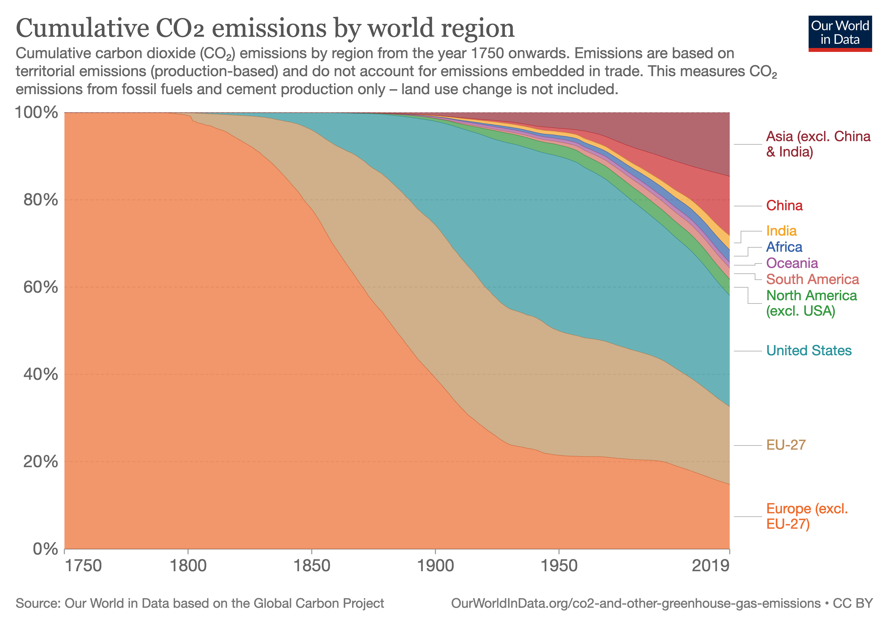
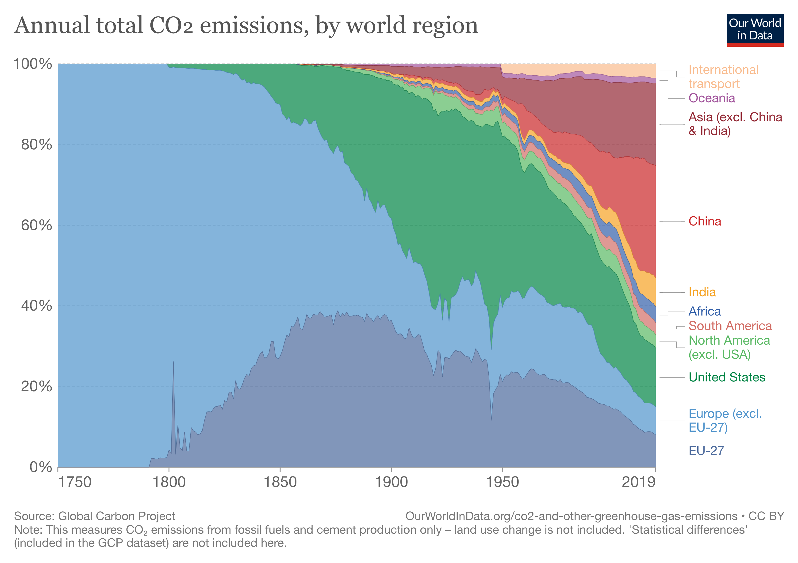

Subsection4.8.1Who is responsible for greenhouse gas emissions?
The question of responsibility for greenhouse gas emissions has emerged as a major one in recent years. The Kyoto Protocol, a 1997 treaty, and the Paris Climate Accords, in 2016, sought to set targets for individual nations to reduce their greenhouse gas emissions. These treaties approached climate change from the perspective of shared responsibility, in a historical sense. Figure Figure 4.8.61 shows how this responsibility for global emissions has changed over time in a stacked 100% line graph. A stacked 100% line graph is like a pie chart stretched out over time - each vertical "slice" of the graph represents the percentage that that region contributed to global greenhouse gas emissions in that year. You can see in the graph that at the beginning (1750), Europe contributed 100% of the recorded emissions of CO2. As time goes on, other regions, like the USA, began to contribute more, and in the 20th century emissions from other parts of the world, like China, India, and the remainder of North America, began to grow.

Figure4.8.61.Percentage of total global CO2 emissions since 1750. EU-27 contains emissions from the 27 nations of the European Union in 2021, with the United Kingdom and Russia (and other nations) in Europe (excl. EU-27). Image CC-BY 4.0 by Hannah Ritchie [4.11.1.28]. Image Description 16.
In the Kyoto Protocol and the Paris Climate Accords, one of the main points of discussion was how much each nation should be asked to cut their emissions. Major emitters today, like China and India, argued that the burden of stopping greenhouse gas emissions should fall mainly on developed nations like the United States, the United Kingdom, and other European countries, because the CO2 that those nations emitted in the past has been and still is a major contributor to climate change. Those nations now enjoy a high quality of life at least in part because of the emissions which they made in the past, but many have substantially reduced their emissions already. Emissions from Europe & the United States account for 58% of total cumulative emissions since 1750, but only 30% of current emissions in 2019 [4.11.1.29].
Developed nations, on the other hand, argued that emissions reductions must be made by developing nations like China and India, because those nations account for such a large part of current emissions. While Asia accounts for 29% of historical emissions since 1750, in 2019 they accounted for 55% of current emissions, as seen in Figure Figure 4.8.62. Because they account for such a large part of current emissions, substantial reductions in their emissions would make a much larger difference in future CO2 levels.

Figure4.8.62.Percentage of annual global CO2 emissions since 1750. EU-27 contains emissions from the 27 nations of the European Union in 2021, with the United Kingdom and Russia (and other nations) in Europe (excl. EU-27). Image CC-BY 4.0 by Hannah Ritchie and Max Roser [4.11.1.29]. Image Description 17.
The Paris Climate Accords provided a mechanism for countries to set individual commitments to reducing emissions. These commitments are reviewed every 5 years, with the overall goal of limiting temperature rise to another \(1.5^\circ C\text{.}\) The agreement also seeks to provide funding to developing nations to help them reduce their emissions [4.11.1.30]. This agreement seeks to strike a balance between the responsibility of nations who have already contributed to current greenhouse gas levels, and those nations which are contributing now.
This table contains the emissions for each region in 2019 [4.11.1.31] and the population of each region in 2019 [4.11.1.32]. We use data from 2019 so that we can ignore the effects of the pandemic, which caused an (unfortunately, short-term) reduction in CO2 emissions that was unequal across different regions.
Table4.8.63.
Region
2019 Emissions
Population
International Transport
\(1.26*10^9\)
-
Oceania
\(4.71*10^8\)
\(4.2*10^7\)
Asia (excluding China & India)
\(7.49*10^9\)
\(1.8*10^9\)
China
\(1.05*10^{10}\)
\(1.43*10^9\)
India
\(2.63*10^9\)
\(1.37*10^9\)
Africa
\(1.41*10^9\)
\(1.31*10^9\)
South America
\(1.07*10^9\)
\(4.27*10^8\)
North America (excluding USA)
\(1.2*10^9\)
\(2.58*10^8\)
United States
\(5.26*10^9\)
\(3.29*10^8\)
Europe (excluding EU-27)
\(2.52*10^9\)
\(2.35*10^8\)
EU-27
\(2.91*10^9\)
\(5.13*10^8\)
Total
\(3.67*10^{10}\)
\(7.71*10^9\)
What does this table tell us about each region's share of emissions? Use the data in the table to answer the questions below.
Checkpoint4.8.64.
Which region on this list contributed the most CO2 to the atmosphere in 2019?
China, with \(1.05*10^{10}\) tons of CO2 in 2019, had higher emissions than any other region, because the exponent is larger than any other.
Checkpoint4.8.65.
Some countries,like China, argue that their emissions are naturally higher because they have more people. Compare the United States and China - if you look instead at tons of CO2 per person, which one has higher emissions?
The USA produces more than twice as much \(CO_2\) per person as China.
What are the factors that should be used in deciding how much each country should reduce emissions? Should the population of the country play a role in making this decision? What about the overall wealth and how developed the country is? Should larger countries, like India and China, that are still developing be allowed to reduce emissions less than well-developed regions like the USA and Europe? The effects of global warming are also unevenly distributed, with low-lying, typhoon-prone countries in Oceania and drought-prone & desertifying countries in Africa being hardest hit. These regions have lower emissions (Oceania's total is skewed up by the presence of Australia and New Zealand, both highly developed countries with higher emissions). Should they be asked to make the same sacrifices as other nations in terms of cutting emissions, when they will also need to be dealing with the other consequences of global warming? All of these are questions that mathematics can help us understand, by allowing us to compare the quantities involved, and the consequences of changing those quantities.